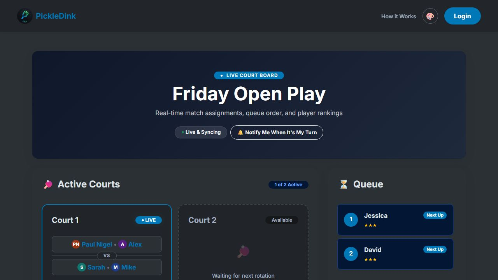

Sports Community PWA
PickleDink
A real-time court queue and analytics system built for a club of competitive and professional pickleball players, offering a free alternative to commercial paid apps.
Dynamic Elo Rating Leaderboards
Big-Screen TV Announcer Mode (TTS)
VIP "Beeper" Targeted Silent Push Alerts